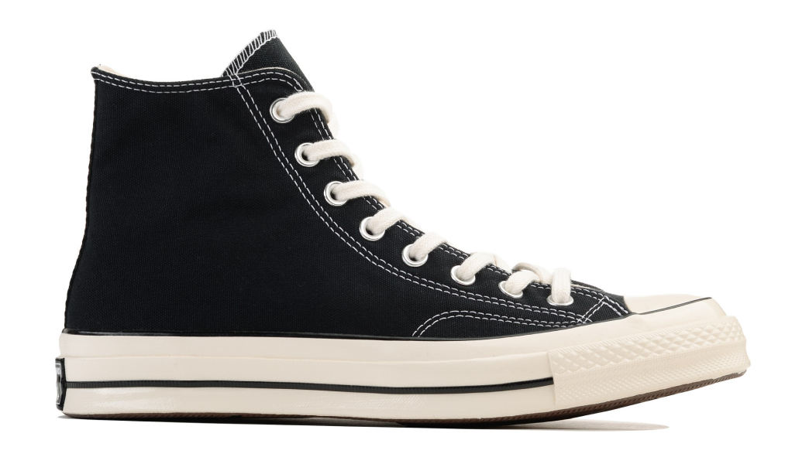

Converse Chuck 70 High
Comme des Garcons PLAY Black
История компании Converse началась в 1908 году, когда Маркус Миллс Конверс основал в Малдене,
Массачусетс, обувную фабрику. Изначально компания специализировалась на выпуске рабочей обуви,
особенно для шахтеров и строителей. В 1917 году компания была переименована в “Converse Rubber
Shoe Company”, поскольку основной акцент был сделан на производство обуви из резины.
В 1921 году Converse представила свою первую баскетбольную обувь, которая быстро стала популярной среди игроков. Это привело к тому, что в 1936 году компания решила сосредоточиться на производстве спортивной обуви. В последующие годы бренд стал ассоциироваться с баскетболом и стал одним из самых узнаваемых в мире спорта.
В 1986 году Converse объединилась с компанией Nike, чтобы расширить свой рынок и улучшить свои продукты. С тех пор, бренд Converse стал еще более известным благодаря сотрудничеству с различными знаменитостями, спортсменами и модными дизайнерами. Сегодня Converse продолжает выпускать разнообразную спортивную обувь и одежду, а также является одним из ключевых игроков на рынке молодежной моды.
В 1921 году Converse представила свою первую баскетбольную обувь, которая быстро стала популярной среди игроков. Это привело к тому, что в 1936 году компания решила сосредоточиться на производстве спортивной обуви. В последующие годы бренд стал ассоциироваться с баскетболом и стал одним из самых узнаваемых в мире спорта.
В 1986 году Converse объединилась с компанией Nike, чтобы расширить свой рынок и улучшить свои продукты. С тех пор, бренд Converse стал еще более известным благодаря сотрудничеству с различными знаменитостями, спортсменами и модными дизайнерами. Сегодня Converse продолжает выпускать разнообразную спортивную обувь и одежду, а также является одним из ключевых игроков на рынке молодежной моды.
| О кроссах | |
| Дата выхода | 11/06/2022 |
| Розничная цена | 145€ |
| Материалы | Текстиль 100%, резина |